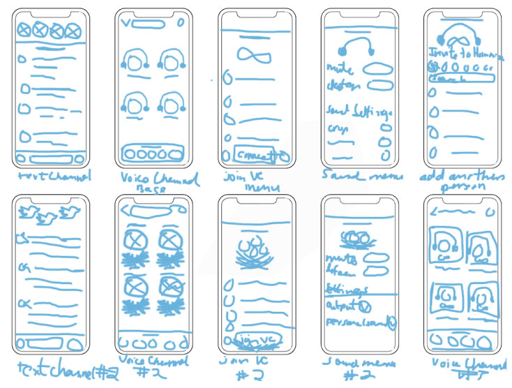
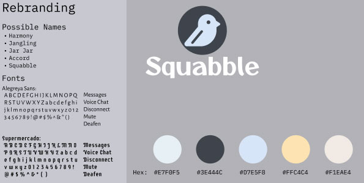
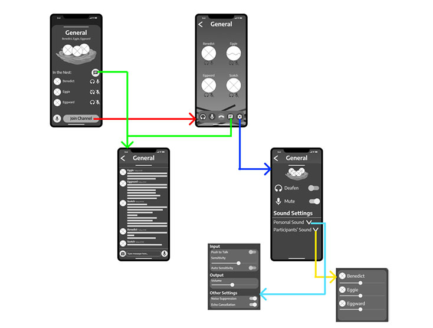
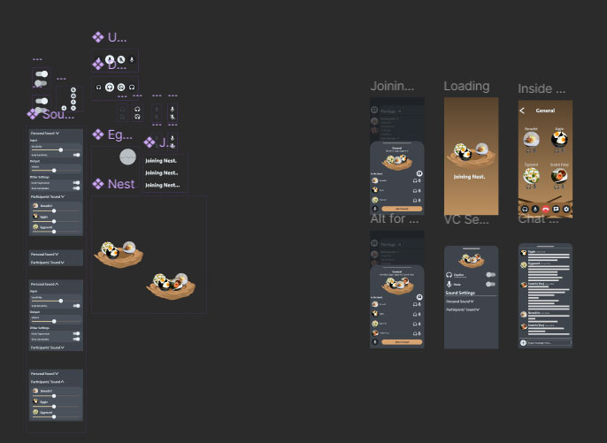

For a mobile interface design class, I was tasked to design an app based on another app while making improvements to its features. I chose to create a voice chat app based on the app Discord using Figma.
For a mobile interface design class, I was tasked to design an app based on another app while making improvements to its features. I chose to create a voice chat app based on the app Discord using Figma.
I started by sketching possible screens for my mobile app. I tried to focus on aspects of Discord that I would want to add, such as the ability to see who is speaking on other screens and an easier way to see if someone is muted or deafened. Half of my sketches were based on one of the brand ideas I had, which after some peer review, I went with.
During this stage, I also started to come up with possible names, fonts, and color palettes for the app. For the color palette, I wanted to stick to neutral colors and with one accent color to keep things simple. The app eventually evolved to have more browns to further push the bird theme. While Discord is full of bright colors, I think a more neutral palette could attract just about everyone. As for fonts, I wanted to choose something that would be easy to read and a font that would fit the fun theme of the app. However, I simplified the font to just Alegreya Sans as the curly Supermercado font gets in the way of readability.
My first prototype was created with visibility and usability in mind. I made text and buttons large so most users could read and tap them. I enlarged the buttons as they do exist on Discord but they are barely noticeable. I also simplified how the voice chat worked. I placed all the major buttons on the voice chat screen to make it easier to control. In addition, I added a visual element that shows everyone inside the voice chat if a person has all voices muted. This is the egg overlay that sits over a person’s profile picture.
In the final iteration, I shrunk down the buttons to be a more reasonable size. This way, the user could focus on the most important buttons before seeing the other features on screen.
If there is anything I would change, it would just be adding sound to the animations. The final prototype does work to show the functions of the app but I think adding some sound effects would enhance the experience.